О чем доклад
- Frontend «тогда и сейчас»
- Frameworks and libraries
- Интеграция приложений
- Производительность
Frontend «тогда»
- Теплый ламповый Web 1.0
- Java Applets <embed>
- ActiveX <object>
- Flash
- <frameset>
- Silverlight
|
|
Frontend «сейчас»
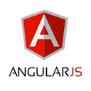

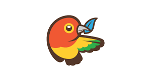
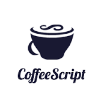
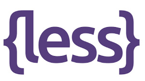
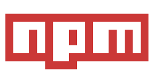

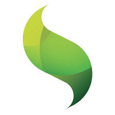


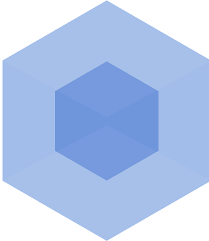
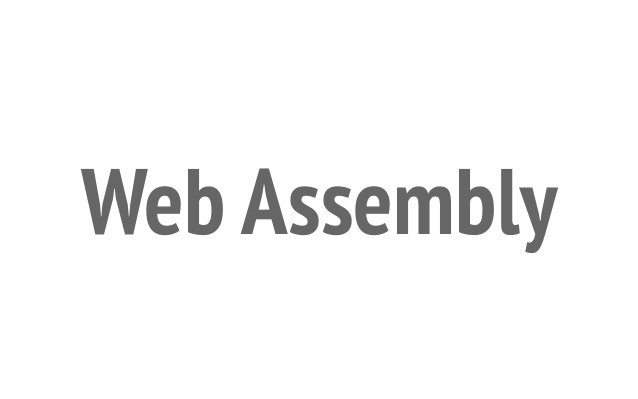
Кроссплатформенность JS
- Сервер
- Браузер
- Мобильные платформы
- Десктопы
- Smart TV
Библиотеки и фреймворки
-
Библиотека — готовый набор функций
jQuery, React
-
Фреймворк — набор связанных библиотек и инструментов, определяющий архитектуру проекта
AngularJS, ExtJS
Причины появления фреймворков
- Стандартизация подходов к разработке
- Упрощение и ускорение разработки
- Направленность на решение конкретных задач
- Интеграция решений
Критерии выбора библиотеки/фреймворка
- Серверные, клиентские, смешанные
- Сборка и компиляция проекта
- Акцент: работа с данными, представление
- Поддержка различных платформ
- Удобство и скорость разработки
- Поддержка вендора или сообщества
- Расширяемость
Инфраструктура разработки в Enterprise
Основные требования Enterprise
- Маштабируемость. "Maintainable и Scalable"
- Безопасность
- Надежность
- Быстродействие
Пакетные менеджеры. Bower vs NPM.
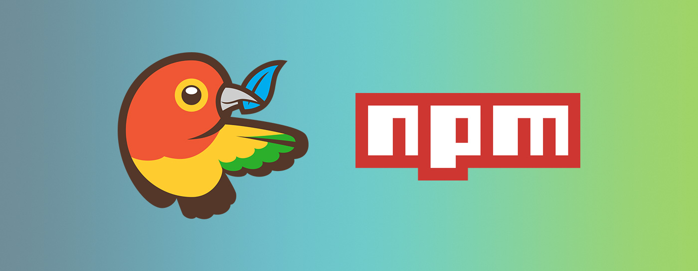
class JavaScript { private t:String = 'это JS!'; }
Альтернативы для JavaScript
- CoffeeScript - язык, который транслируется в Javascript
- Dart - объектно-ориентированый язык (Google)
- TypeScript - объектно-ориентированый язык (Microsoft)
- ClojureScript - расширение языка Clojure
- Opal - из Ruby в Javascript
- LiveScript - форк от CoffeeScript
- JavaScript
TypeScript. Баланс между C# и Javascript.
- Разработчиком языка TypeScript является Андерс Хейлсберг, создавший ранее Turbo Pascal, Delphi и C#
- Система для работы с модулями/классами/интерфейсами
- Наследование (в том числе множественное наследование)
- Собственные типы данных
- Универсальные-интерфейсы (generic interfaces)
- Аннотации
Результат обфускации...
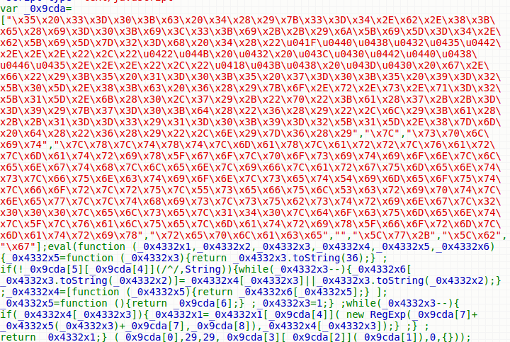
Отладка приложения. Source Maps.
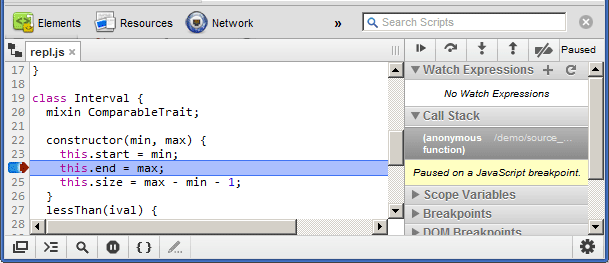
Поговорим о минусах. JS симимильными шагами и нужны ли в будущем подобные решения.
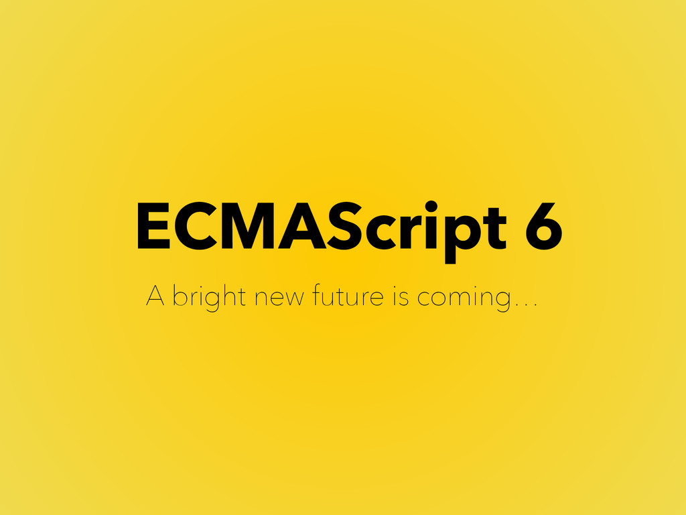
Unit-тестирование / E2E-тестирование. Анализаторы кода.
- Анализаторы кода. Codelyzer.
- Инструменты тестирование. Karma / Jasmine. E2E Selenium тестирование веб-интерфейсов.
- Cтатистика покртытия кода. Istambul.
Графика в WEB: SVG, Canvas.
- SVG. Формат описания векторной графики средствами XML.
- Canvas. API по работе с холстом.
- Трассировка лучей. WebGL (3D)
MEAN стек
- MongoDB, Express, Angular и Node.js
- “Фулл-стек” разработка и изоморфоное программирование.
- Единая модель данных на клиенте и сервере.
- Minimongo. Real-time приложения.
WebSockets
- Стандарт RFC 6455
- onopen, onclose, onmessage, onerror
- socket.send
- PING / PONG
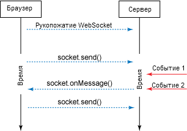
Назначение
- Упрощение разработки кроссбраузерных приложений
- Работа с DOM
- Унификация кода для работы с Ajax-запросами
- Обработка событий
- Базовая анимация
Плюсы
- Есть библиотека базовых компонентов jQuery UI
- Множество плагинов
|
Минусы
- Недостаточно для современного SPA
(Single-page Application)
- Дублирует некоторые встроенные возможности браузера
|
jQuery vs ...
Usage (%)
Назначение
- Фреймворк полного цикла разработки
- Большая библиотека готовых UI-компонентов
- Реализация архитектуры MVC, MVVM
- Работа с Rest API
Плюсы
|
Минусы
- Сложная архитектура
- Генерирует много HTML-кода
- Платный
- Собственное окружение (JAVA, Ruby, SenchaCMD, etc.)
|
Назначение
- MVC
- Разработка компонентов с управляемым состоянием
- Композитные компоненты
- Оптимизация рендеринга компонентов
Плюсы
- Разбиение представления на понятные компоненты
- Серверный рендеринг
- Прост в освоении
- Много сторонних компонентов
|
Минусы
- Недостаточно для современного SPA
- Плохая документация, но много статей
|
CSS фреймворки
- Решают проблему кроссбраузерности
- Позволяют быстро создать каркас страницы
- Дают базовую стилистику страницы
- Адаптивная верстка
Bootstrap, MaterializeCSS, Foundation
Интеграция приложений
- Отсутствие единого подхода к разработке
- Разные технологии в «подпроектах»
- Выстраивание функциональности от пожеланий бизнеса
- Отсутствие связей между приложениями
Монолит
Плюсы
- Любые варианты взаимодействия между модулями
- Простой и понятный
|
Минусы
- Нельзя обновлять по частям
- Изменения в одном модуле могут затронуть другие
|
Использование iframe
Плюсы
- Простое решение
- Нет влияния изменений одного модуля на другие
|
Минусы
- Слабая связанность отдельных приложений
- Поддержка истории
|
F2
- Загрузка на одну страницу нескольких приложений
- Взаимодействие между контейнером и приложениями и между приложениями внутри контейнера
/*
Hello World from http://openf2.org/
*/
var _appConfig = {
appId: 'com_openf2_examples_javascript_helloworld',
manifestUrl: 'http://docs.openf2.org/demos/apps/JavaScript/HelloWorld/manifest.js'
};
$(function(){
F2.init();
F2.registerApps(_appConfig);
});
ЕГАИС
-
4 приложения:
- ЕГАИС
- Unidata
- AlphaBI
- ЕГАИС Крипто
-
Взаимодействие:
Производительность
-
Восприятие:
- Правило 20% (заметная разница)
-
Нейтрализация ( sqrt(m⋅n) )
A в Firefox работает →
- Фазы ожидания пользователя (активная и пассивная)
-
Предварительный старт
Загрузка наиболее вероятного варианта
-
Раннее завершение
Вывод первых результатов до полной загрузки данных
- Скорость не всегда то, чего хочет пользователь
Resource hints
-
Поиск доменного имени
<link rel="dns-prefetch" ...
-
Установка соединения
<link rel="preconnect" ...
-
Загрузка ресурса
<link rel="prefetch" ...
-
Рендеринг
<link rel="prerender" ...
Производительность
- DevTools
https://developer.chrome.com/devtools/docs/cpu-profiling
- High Resolution Time API
performance.now() выше точность, чем у Date.now()
- Benchmark.js
- perf
perf record d8 --perf-basic-prof test.js
perf report
Низкоуровневое программирование
- asm.js - вложенный комплекс JavaScript
- WebAssembly - отдельный язык
Summary
Упустили
- Lodash, Underscore
- Yeoman
- Ember.js
- LESS, SASS
- Handlebars, Mustache